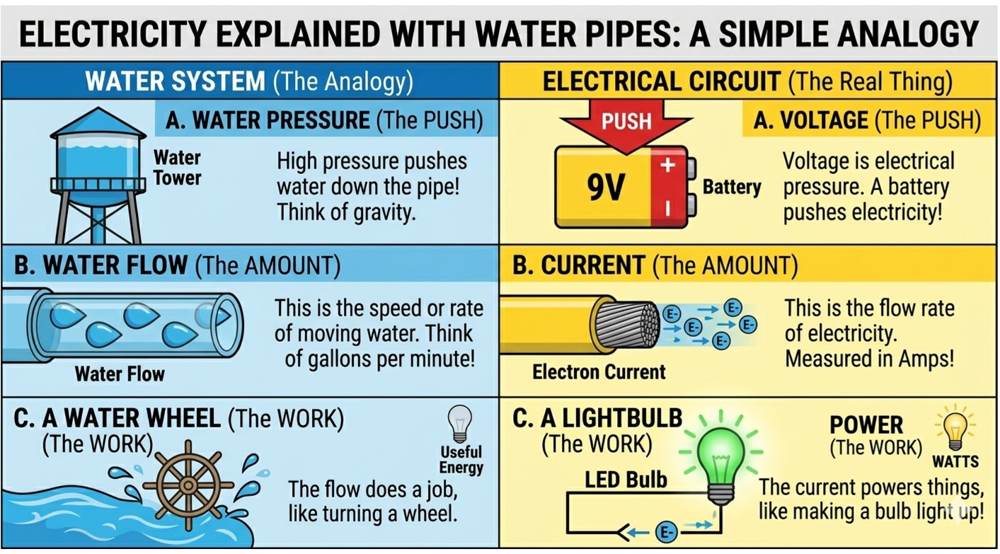
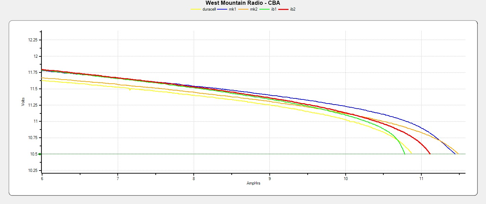
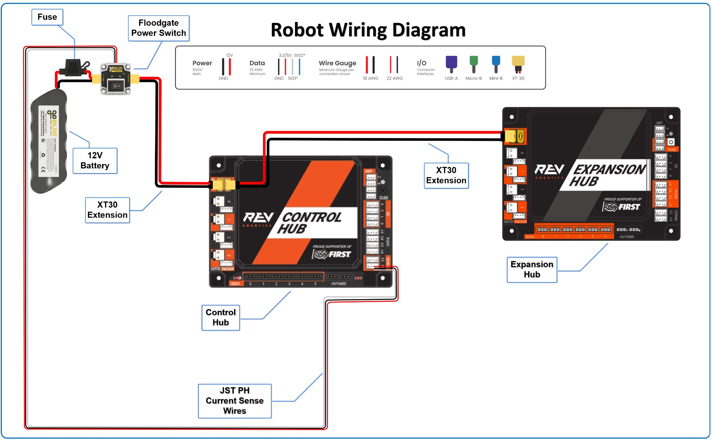
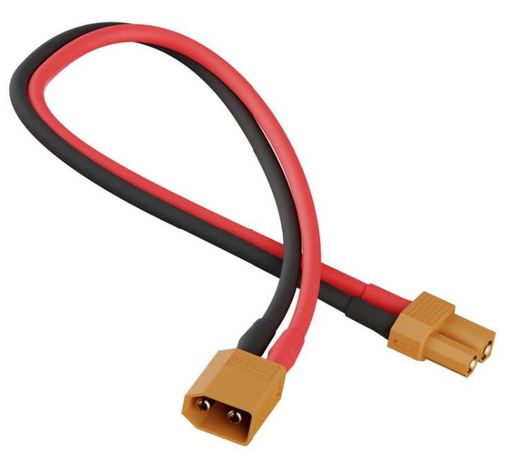
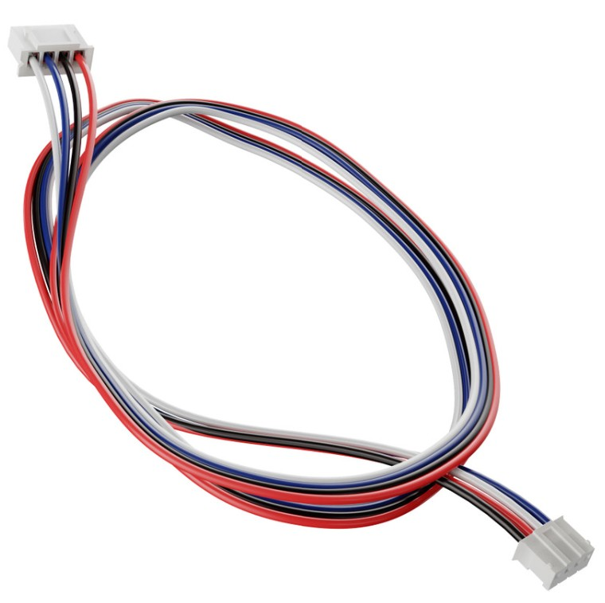
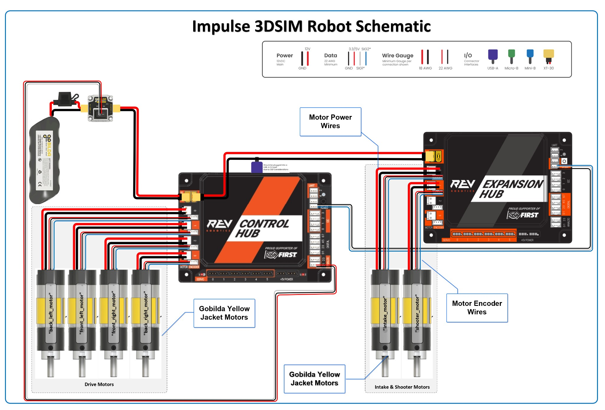
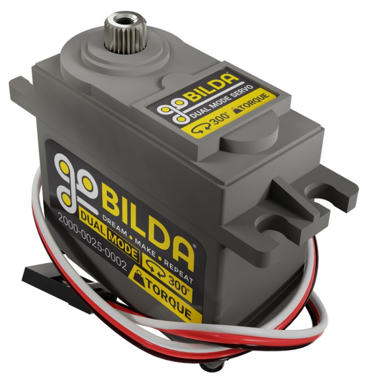
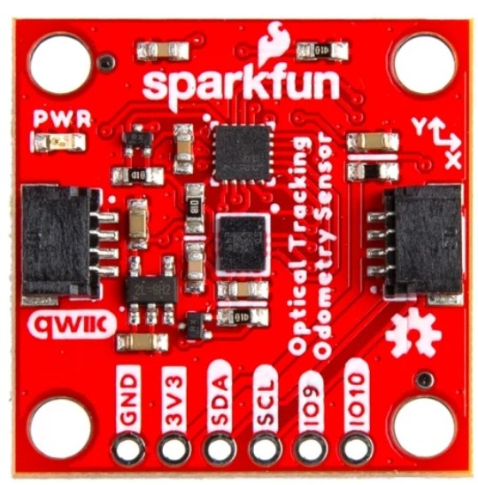
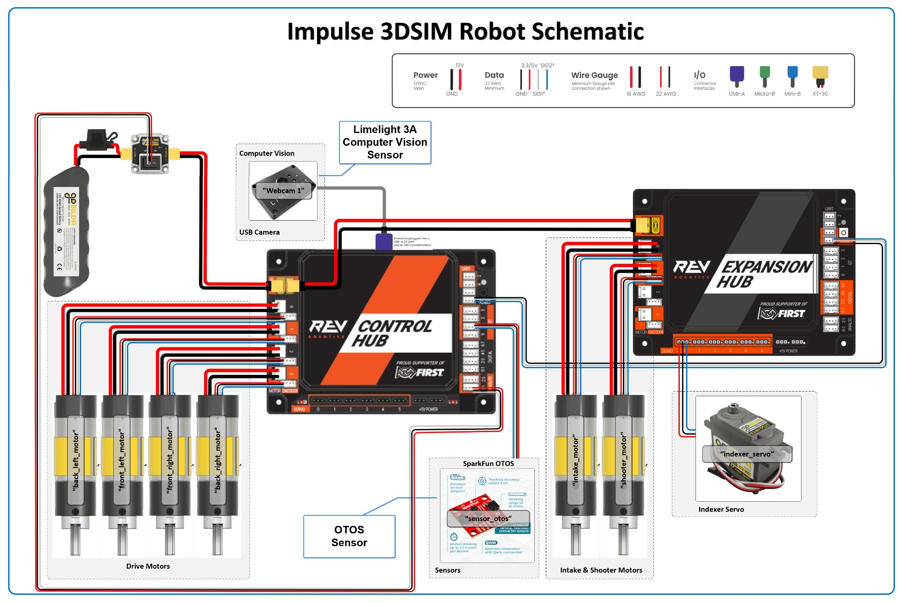
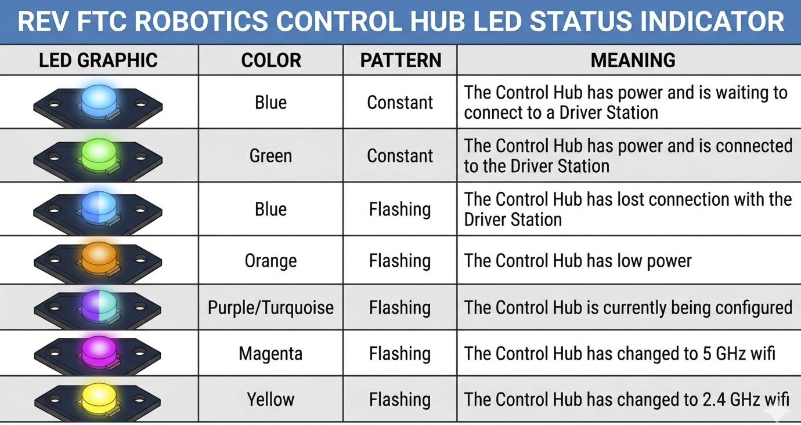

Every FTC robot is an electrical system before it is anything else. Power flows from the battery through wires, switches, and connectors to motors, servos, and sensors. Understanding that flow -- even at a basic level -- means you will wire things correctly, diagnose problems faster, and understand exactly what happens when your robot starts to slow down at the end of a match.
This lesson covers the fundamentals. No coding required -- just read, look at the diagrams, and take notes.
Electricity has two properties you need to understand: voltage and current. The classic way to think about them is a water system.

Voltage is the electrical "pressure" pushing electrons through a wire. It is measured in volts (V). The higher the voltage, the harder the electrons are being pushed. Your FTC battery supplies 12 volts.
Current is the rate at which electrons actually flow through the wire -- how much electricity is moving at any moment. It is measured in amps (A). A small LED might draw 0.02 amps. A drive motor under load can pull 5–10 amps. When all four drive motors are stalled at the same time, the whole drivetrain can demand 40+ amps from the battery at once.
Power is voltage multiplied by current: Power (watts) = Volts × Amps. A motor drawing 5 amps at 12 volts is consuming 60 watts -- about the same as a bright light bulb.
circuit. Current (amps) is the flow rate of electricity. Power equals volts × amps. Your FTC battery is 12V, and motors can draw many amps under load.
Not all wire is the same. Wire thickness is described by a number called its gauge (AWG -- American Wire Gauge). Here is the counterintuitive part: a lower gauge number means a thicker wire. 18 AWG wire is thicker than 22 AWG wire.
Why does thickness matter? A thicker wire can carry more current without getting hot. If you run too much current through a wire that is too thin, it acts like a resistor -- it heats up, the voltage drops, and in extreme cases it can melt the insulation or start a fire.
On an FTC robot you will typically see two gauges:
battery to the Control Hub. These carry the high current that motors demand.
and encoder cables. These carry tiny currents and only need to transmit signals.
thicker. Use 18 AWG for main power lines that carry motor current. Use 22 AWG for sensor and signal wires.
The FTC-legal battery is a 12V NiMH (Nickel-Metal Hydride) rechargeable pack. It is the single power source for everything on the robot -- the Control Hub, the Expansion Hub, all motors, all servos, and all sensors.

Look at that graph carefully. It is a real battery discharge curve measured on FTC NiMH batteries. Each line represents a different brand tested under load. Notice several things:
The battery does not just die. A fresh battery starts around 11.75–11.8 volts. As the match progresses, voltage slowly sags. Near the end, the curve gets steeper and the battery voltage drops faster. The battery does not give you 12V for two minutes and then instantly stop -- it gives you gradually less and less, and then at some point it can no longer supply the current your motors need and the robot shuts down or the Control Hub reboots.
This has real consequences for your robot's behavior. A drive motor told to go at "50% power" is actually getting 50% of whatever voltage the battery currently supplies. At the start of a match (11.8V) that is about 5.9V to the motor. Near the end (10.8V) that same "50%" command only delivers 5.4V -- the robot is physically slower, even though the code has not changed.
Battery brand matters. Some batteries (like the blue mk1/mk2 lines in the graph) hold voltage better than others under sustained load. Teams that use high-quality batteries will have more consistent robot behavior throughout a match.
sags** as it discharges. Your robot will be slightly slower and weaker at the end of a match than at the beginning. Knowing this helps you explain why the robot "feels different" late in a match.
a partially discharged battery is one of the most common causes of poor or inconsistent robot performance at tournaments.
Between the battery and the Control Hub sit two protective components: the fuse and the power switch.

A fuse is a deliberate weak link in the circuit. It contains a thin metal strip that melts -- and cuts the circuit open -- if too much current flows through it. FTC robots use a 20A fuse in the main power line.
If a motor stalls hard, a wire shorts, or something goes badly wrong, the fuse blows before the wiring, the battery, or the Control Hub can be damaged. A blown fuse is cheap and easy to replace. A melted wire harness or a damaged Control Hub is not.
The Floodgate power switch (you can see it between the fuse and the Control Hub in the diagram above) is an on/off switch required by FTC rules. It must be mounted somewhere accessible on the robot so that a referee can cut power in an emergency. Pressing the switch cuts all power instantly -- motors stop, the Control Hub shuts down.
The power switch is required by FTC rules and lets a referee immediately cut all power. Both live in the main power line between the battery and the Control Hub.
Different parts of the robot use different types of connectors, each chosen for the current they carry and the connection they need to make.

The large yellow connectors on the battery and the main power wires are XT30 connectors. They are rated for 30 amps continuous and are the standard high-current connector in FTC. The battery cable, the wires going into the Control Hub and Expansion Hub, and jumpers between hubs all use XT30 connectors.
You can identify them by their shape: two round gold pins, with one larger than the other so they are impossible to plug in backwards.

The small multi-wire connector with a locking white housing is a JST-PH connector. This is the data connector used for motor encoder cables and most sensors on the Control Hub. The 4-position version carries the encoder signals (two channels, ground, and power) from the motor back to the hub.
Because these connectors are small, they carry low current. They are for signals only -- never try to run motor power through a JST-PH connector.
30A. JST-PH connectors (white, small) carry sensor and encoder signals only -- low current, do not use them for motor power.
An FTC DC motor converts electrical energy into mechanical
rotation. When you call motor.setPower(1.0) in your code, the
Control Hub applies the battery voltage across the motor's
terminals. Current flows, the motor spins.
The Control Hub is both the computer and the motor controller. Inside the hub, there are four built-in motor controller circuits -- one per motor port. Each controller takes your software command (a number from -1.0 to +1.0) and uses it to control the fraction of battery voltage it applies to that motor. This is done with a technique called PWM (Pulse Width Modulation): the controller rapidly switches the motor's power on and off, and the ratio of on-time to off-time determines the effective voltage.

The diagram above shows all six motors on the Impulse robot (four drive motors and two mechanism motors) wired into the Control Hub and Expansion Hub motor ports. Notice how two separate cables go to each motor: the thick power wires and the thin encoder cable.
translate your code commands (-1.0 to +1.0) into actual voltage at the motor terminals using PWM. The Expansion Hub adds four more motor controllers when you need extra motors.
A servo is different from a DC motor. A standard servo moves to a specific angular position and holds it there. You give it a target position (0.0 to 1.0 in FTC code) and it drives itself to that angle. A continuous rotation servo works like a motor -- you give it a speed, not a position.

Servos are plugged into the servo ports along the bottom of the Control Hub (numbered 0–5). Unlike motor ports, servos draw power from a separate 5V regulated supply inside the hub, not directly from the 12V battery. This means servos always receive a consistent voltage regardless of battery state -- one reason they position so precisely.
The trade-off is that servo ports are current-limited. If a servo is heavily loaded and stalling, it can trip the 5V supply's protection circuitry and temporarily disable all servo ports. Watch for mechanisms that bind or jam.
Sensors are how the robot perceives the world. A sensor measures something -- distance, color, orientation, position -- and sends a number back to the Control Hub over a data wire. Your code reads that number and makes decisions based on it.

The SparkFun OTOS (Optical Tracking Odometry Sensor) shown here is a good example. It has a tiny optical mouse sensor pointed at the floor to track the robot's exact position and heading. It connects to the Control Hub's I2C port with a thin 4-wire JST cable.
Sensors consume very little current -- a few milliamps. The Control Hub provides regulated 3.3V or 5V power to sensors through their connector, so sensor power is also isolated from the noisy 12V motor supply.

The full schematic above shows how everything connects together on the Impulse robot: battery → fuse/switch → Control Hub → motor ports, servo ports, and sensor ports. The Expansion Hub adds more capacity on the right side.
The Control Hub has a status LED on its face that tells you what the hub is doing at a glance. Learning to read it will save you minutes of confusion at a competition.

| Color | Pattern | Meaning | |-------|---------|---------| | Blue | Constant | Powered on, waiting to connect to Driver Station | | Green | Constant | Connected to Driver Station -- ready to run | | Blue | Flashing | Lost connection with Driver Station | | Orange | Flashing | Low battery | | Purple/Turquoise | Flashing | Hub is being configured | | Magenta | Flashing | Hub switched to 5 GHz Wi-Fi | | Yellow | Flashing | Hub switched to 2.4 GHz Wi-Fi |
In normal operation, you want to see solid green before you start a match. If you see solid blue it means the Driver Hub has not connected yet -- check that the Driver Hub's Wi-Fi is pointed at the right network. If you see flashing orange mid-match, the battery is running very low and performance will degrade quickly.
to run. Flashing orange means low battery. Solid blue means the hub is waiting for the Driver Station to connect.
Now you can trace the full electrical path on your robot:
Battery → fuse → power switch → Control Hub (and Expansion Hub) → motor controllers → motors
Separately: Control Hub → 5V regulator → servo power supply → servos
And: Control Hub → 3.3V/5V regulated → sensor ports → sensors
Everything starts with that one battery. Every motor, every servo, every sensor, and the Control Hub itself all draw from the same source. When you stall four drive motors at once, all that current is coming from one pack of NiMH cells. If you are wondering why the robot suddenly slows down in the middle of a match, now you know where to look.
flow rate. Power = volts × amps.
signals.
a match -- the robot is slightly weaker at the end than the start.
The power switch lets a referee cut all power instantly.
connectors** carry sensor and encoder signals only.
translate code commands into motor voltage via PWM.
precisely, but servo ports are current-limited.
low-voltage ports.
at a glance -- solid green is good.
lesson!